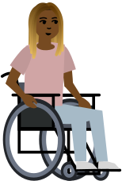

Bliss Board for C.A.R.E.
This is the unofficial site for C.A.R.E. to speed up bliss board conversations.
Type a code to see the corresponding word.

This is the unofficial site for C.A.R.E. to speed up bliss board conversations.